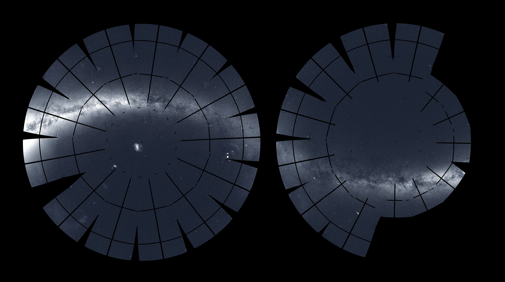

The year 2020 has been an eventful one for TESS! Here are just some of the highlights:
In early January, we kicked the year off with the discovery of our first habitable-zone planet, TOI 700d. The planet was detected by TESS and confirmed with NASA’s Spitzer Space Telescope. TOI 700d is a small (40% mass of the Sun), cool (half the surface temperature of the Sun) M dwarf star which is only 100 light years away in the constellation of Dorado. Three planets are thought to orbit the star: TOI 700 b which is about the size of the Earth and likely rocky with an orbital period of 10 days. TOI 700 c, a likely gassy planet 2.6 times larger than Earth with an orbital period of 16 days. TOI 700 d, the outermost planet located in the habitable zone with an orbital period of 37 days.
TESS discovered its first Earth-size planet in its star's habitable zone. The planet is called TOI 700 d. Credits: NASA's Goddard Space Flight Center.
In May, it was reported that TESS was used to investigate dozens of young, rapidly rotating stars known as Delta Scuti stars. These stars pulsate in interesting ways, with patterns that are unpredictable and difficult to understand. A team of scientists, led by a professor at the University of Sydney, used TESS data to examine these kinds of stars and found a sub-set with regular pulsation patterns! On finding this trend, the team went on to look for more examples within the Kepler data set and via ground-based observations. The stars found are incredibly important, as their regular patterns have laid the foundation for our understanding of this class of variables, allowing for comparison to models and further exploration.
The rapid beat of HD 31901, a Delta Scuti star in the southern constellation Lepus. The sound is the result of 55 pulsation patterns TESS observed over 27 days sped up by 54,000 times. Credits: NASA's Goddard Space Flight Center and Simon Murphy, University of Sydney.
In late June, TESS then helped discover a Neptune sized planet orbiting AU Microscopii, a cool red M dwarf star, located in the Microscopium constellation 31.9 light years away. At only 20-30 million years old, this host star is an infant and subject to producing numerous flares! It is these “temper tantrums” that made detecting the planet particularly difficult.
Downloadable Galaxy of Horrors poster for AU Mic. Credits: NASA-JPL/Caltech.
The 4th of July marked the end of TESS’s prime mission. This was a two year survey that mapped roughly 75% of the sky, found 66 new exoplanets, and 2,100 candidate planets. TESS has now entered into its extended mission, which will last until September 2022.

TESS's two yearlong panoramas appear side by side in twin polar views centered on the southern (left) and northern ecliptic poles. Credits: NASA/MIT/TESS and Ethan Kruse (USRA).
Mid-September brought the discovery of TESS’s first possible “survivor” planet closely orbiting a white dwarf. The planet, WD 1856 b, is similar to the size of Jupiter and orbits its host every 34 hrs. WD 1856 b’s location is unusual as most objects that close are usually torn apart by the white dwarf’s gravitational pull. Scientists are still baffled as to how the planet has survived.
In this illustration, WD 1856 b, a potential Jupiter-size planet, orbits its much smaller host star, a dim white dwarf. Credits: NASA’s Goddard Space Flight Center.
And in early October, TESS and the UNC-Chapel Hill Evryscope telescope array simultaneously observed the largest sample of super flares known to date. The data from these observations will help astrobiologists understand how much radiation planets experience during super flares, and thus explore their habitability.
Thank you to everyone who helped to make 2020 a successful year for TESS science!